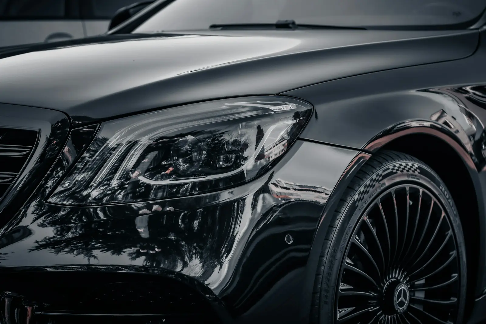

Yozgat · Profesyonel araç uygulama merkezi
Garantili detailing. Yozgat’ta.
Gyeon seramik kaplama, boya koruma, 3 kademe pasta cila ve kolloidal gümüşle iç sterilizasyon. Her işi belgeli garantiyle teslim ediyoruz.
5,0Google’da 35 yorum
Yozgat’ın ilk ve tek
Gyeon uygulama merkezi
Gyeon uygulama merkezi
Randevulu çalışıyoruzPzt–Cmt · 09:00–19:00
Erdoğan Akdağ Mah. · YozgatYol tarifi al↗
Hemen arayın0541 357 93 59→
Uyguladığımız markalar
Hizmetlerimiz
Görünen yeri değil,
her yeri.
Her araç önce LED ışık altında incelenir. Neye ihtiyacı varsa onu söyleriz, gerekmeyen işlemi önermeyiz.
Farkı görün
Önce. Sonra.
Çizgiyi sürükleyin. Boyadaki sorunu seçin; işlemden önce nasıl göründüğünü ve sonrasını karşılaştırın.

ÖNCESONRA
Temsili canlandırma
Fiyatlar
Şeffaf fiyat,
sürpriz yok.
Aracınızı seçin, bütün fiyatlar ona göre güncellensin. Hazır paketlerden birini seçebilir ya da kendi paketinizi oluşturabilirsiniz.
2İstediğiniz işlemler
Garanti sorgulama
Garantiniz
kâğıtta kalmaz.
Seramik kaplama ve boya koruma uygulamalarımız plakanıza kayıtlı, dijital garanti belgesiyle teslim edilir. Belgenizi kaybetseniz de plakanızla sorgularsınız.
Örnek plakalar:
- 1Uygulanan ürün, 11 panel boya kalınlık (mikron) kaydı ve garanti süresi tek ekranda.
- 26. ay bakım kontrol günü yaklaşınca WhatsApp’tan otomatik hatırlatma.
- 3Aracınızı satarken doğrulama linkini ilana ekleyip aracınızın değerini belgelersiniz.
Hakkımızda
“Sadece görünen yerleri değil, görünmeyen yerleri de temizliyoruz. Göz boyamak için aracı kimyasala bulayıp bırakmıyoruz.”
EXAhmet UstaKurucu · eXtreme Auto & Detailing
2020Yozgat’ta açıldık. O günden bu yana aynı titizlikle çalışıyoruz.
5,0Google’da 35 yorumun tamamı 5 yıldız.
3 yılHikari Pro seramik kaplamada garanti süresi.
1.Yozgat’ın ilk ve tek Gyeon uygulama ve satış merkezi.
Çevre illerden ve ilçelerden geliyorlar
Yolunuza değsin diye
önce fiyatı netleştiriyoruz.
Geldiğiniz ilçeyi veya şehri seçin; yolculuk sürenize göre teslimat planınızı görün. Fotoğraflarla fiyatı gelmeden netleştirir, stüdyoyu sadece sizin aracınıza ayırırız.
Çalıştığımız araçlardan: BMW · Mercedes-Benz · Porsche Panamera · Maserati GranTurismo · Range Rover · Audi · Volkswagen · Volvo · Skoda · Toyota · Honda · Peugeot
Müşteri yorumları
Aracını emanet
edenler anlatıyor.
Tümünü gör ↗
Stüdyodan
Detaydan kareler.
Görseller temsilidir; yayında stüdyonuzun kendi fotoğraflarıyla değiştirilecektir.
Detay rehberi
Merak ettikleriniz,
sade bir dille.
 Mevsimsel bakım
Mevsimsel bakımYozgat Kışında Araç Boyası: Tuz, Kum ve Ayaza Karşı 7 Önlem
Yol tuzu, donup çözülen çamur ve sabah ayazı boyaya ne yapar? Kıştan önce yapılacak 7 şey.
3 dk okumaOku →
 Seramik kaplama
Seramik kaplamaGyeon One, Mohs, Syncro, CanCoat: Hangi Gyeon Ürünü Size Uygun?
Aynı marka, farklı ürünler. Garanti süreleri, farkları ve hangisinin size uygun olduğu.
3 dk okumaOku →
 İç temizlik
İç temizlikAraçta Kolloidal Gümüşle Sterilizasyon Nedir? Kimler İçin Gerekli?
Temizlik ile sterilizasyon aynı şey değil. Kolloidal gümüş ne yapar, kimler için gerekli?
3 dk okumaOku →
Sık sorulanlar
Aklınızdaki sorular.
Cevabını bulamadığınız bir şey varsa WhatsApp’tan yazın, hemen dönelim.
Yozgat’ta seramik kaplama fiyatı ne kadar?
Hatchback ve sedan araçlarda Gyeon One ile 12.900 TL’den başlar. Aracın büyüklüğü, boyanın durumu ve seçilen ürün fiyatı belirler; fotoğraf gönderirseniz net fiyatı aynı gün söyleriz. Seramik kaplama →
Garanti belgesi veriyor musunuz?
Evet. Seramik kaplama ve boya koruma uygulamalarımız plakanıza kayıtlı dijital garanti belgesiyle teslim edilir. Hikari Pro’da 3 yıl, Gyeon One ve Mohs’ta 2 yıl, Gyeon CanCoat’ta 1 yıl garanti veriyoruz. Garanti sorgula →
Seramik kaplama mı, PPF mi?
Seramik kaplama parlaklık ve kolay temizlik sağlar ama taş darbesine karşı korumaz. PPF ise fiziksel bir filmdir; taş, çizik ve sürtünmeye karşı korur. En çok tercih edilen: ön bölgeye PPF, geri kalanına seramik. Karşılaştırma →
Pasta cila boyaya zarar verir mi?
Doğru yapıldığında hayır. İşleme başlamadan her panelin boya kalınlığını ölçüyor, 3 kademede yalnızca gereken kadar malzeme alıyoruz. Detaylı anlattık →
İşlem ne kadar sürer?
Sterilizasyon paketi yarım gün, boya koruma 1 gün, seramik kaplama 2–3 gün, PPF 2–4 gün sürer. Randevu verirken net teslim gününü söylüyoruz.
Şehir dışından geliyorum, aynı gün teslim olur mu?
İç temizlik, sterilizasyon ve çoğu boya koruma işi aynı gün teslim edilir. Fotoğraflarla fiyatı önceden netleştirir, randevuyu yolculuğunuza göre ayarlarız.
Randevuyu nasıl alırım?
En hızlısı WhatsApp: aracınızın birkaç fotoğrafını ve istediğiniz işlemi yazın, size uygun günü birlikte belirleyelim.
Ödeme seçenekleri neler?
Nakit, havale/EFT ve kredi kartı ile ödeme yapabilirsiniz. Taksit seçenekleri için bizimle iletişime geçin.
İletişim
Stüdyomuza
uğrayın.
Randevulu çalışıyoruz; aracınız geldiğinde sıra beklemeden işleme alınır.
AdresErdoğan Akdağ Mah. Muslubelen Sk. Hisar Apt. No:1, 66100 Yozgat Merkez
Telefon · WhatsApp0541 357 93 59
Çalışma saatleriPazartesi–Cumartesi · 09:00–19:00
Pazar randevuyla
Pazar randevuyla